Kiper terbaik adalah penjaga gawang yang memiliki kemampuan
paling unggul dalam mengamankan gawang dari ancaman lawan.
Seorang kiper dianggap terbaik jika mampu melakukan penyelamatan penting,
menjaga clean sheet, kuat dalam situasi satu lawan satu, serta tangguh
menghadapi bola-bola udara. Selain itu, refleks cepat, ketenangan, dan
kemampuan membaca arah serangan lawan juga menjadi faktor utama yang
menentukan kualitas seorang kiper.
Dalam sepak bola modern, kiper terbaik tidak hanya bertugas menghentikan tembakan,
tetapi juga harus memiliki distribusi bola yang akurat untuk membantu membangun
serangan dari belakang. Kemampuan memimpin lini pertahanan, berkomunikasi dengan
para bek, dan menjaga konsistensi sepanjang musim membuat seorang kiper semakin
berpengaruh bagi tim. Kombinasi teknik, mental kuat, dan pengambilan keputusan
yang tepat menjadikan seorang kiper layak disebut sebagai yang terbaik. Dibawah ini daftar 8 kiper terbaik saat ini 2025 yang dirangkum menurut analisis data football-inpo-10pemainSepakBola_Terbaik
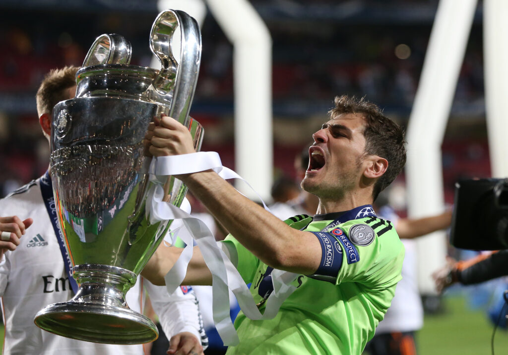
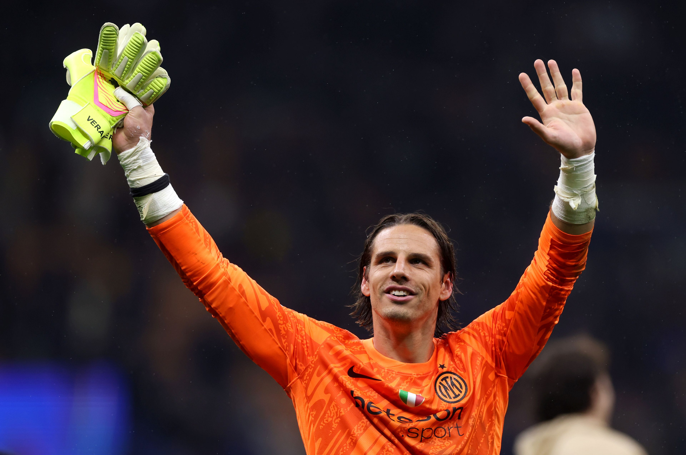
Negara: Swiss
Klub: Inter Milan
Sommer memiliki reaksi cepat dan kemampuan shot-stopping yang handal. Ia konsisten menjaga gawang tetap aman di berbagai kompetisi, baik domestik maupun Eropa. Ketenangan dan fokusnya dalam menghadapi tekanan lawan membuatnya menjadi kiper yang sangat sulit ditembus. Selain kemampuan teknis, Sommer juga unggul dalam aspek kepemimpinan. Ia mampu mengatur lini belakang, memberi arahan kepada rekan setim, dan menjaga koordinasi pertahanan tetap rapat. Kombinasi pengalaman, teknik, dan konsistensi menjadikannya salah satu kiper terbaik dunia pada 2025.
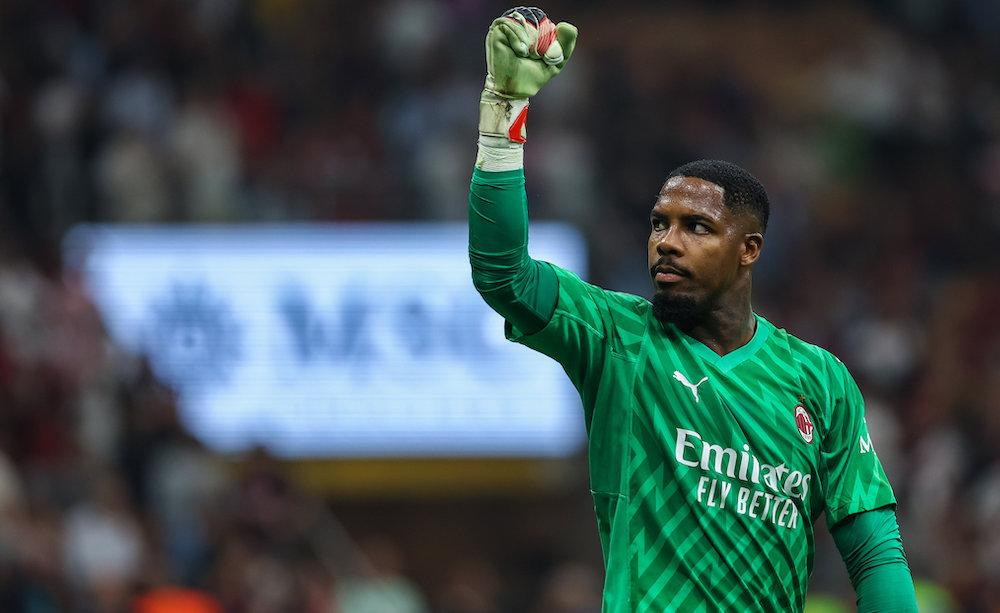
Negara: Prancis
Klub: AC Milan
Maignan dikenal sebagai kiper modern yang sangat tangguh dalam menghadapi tekanan. Kemampuan refleksnya luar biasa, terutama dalam menahan tembakan jarak dekat maupun serangan mendadak dari lawan. Ia juga memiliki insting yang sangat baik dalam membaca permainan, sehingga sering berada di posisi tepat untuk memotong peluang lawan. Konsistensi performanya membuat lini belakang AC Milan lebih percaya diri, dan ia sering menjadi penentu kemenangan di laga-laga penting. Selain kemampuan teknis, Maignan memiliki kepemimpinan yang menonjol. Ia mampu mengatur lini pertahanan, memberi instruksi kepada rekan setim, dan menjaga koordinasi seluruh bek. Ketangguhan mentalnya terlihat jelas dalam situasi tekanan tinggi, seperti pertandingan Liga Champions atau duel melawan striker top dunia. Kombinasi skill, pengalaman, dan ketenangan mental membuatnya salah satu kiper terbaik Eropa pada tahun 2025.
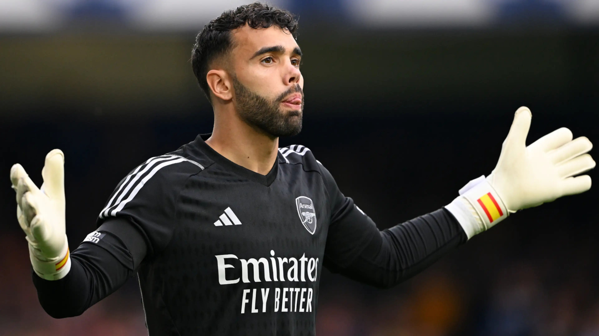
Negara: Spanyol
Klub: Arsenal
David Raya menonjol karena kemampuan distribusi bolanya yang sangat akurat, baik dalam umpan pendek maupun panjang. Ia mampu membantu tim membangun serangan dari belakang dengan presisi, sehingga menjadi aset penting dalam strategi modern Arsenal. Selain itu, Raya juga memiliki refleks yang cepat dan kemampuan shot-stopping yang baik, sehingga mampu menahan peluang emas lawan. Kepemimpinan dan ketenangan di bawah tekanan menjadikan Raya salah satu kiper modern paling bernilai saat ini. Ia mampu mengatur pertahanan, memotong serangan lawan, dan tampil konsisten sepanjang musim, membuatnya menjadi salah satu kiper terbaik di dunia pada 2025.
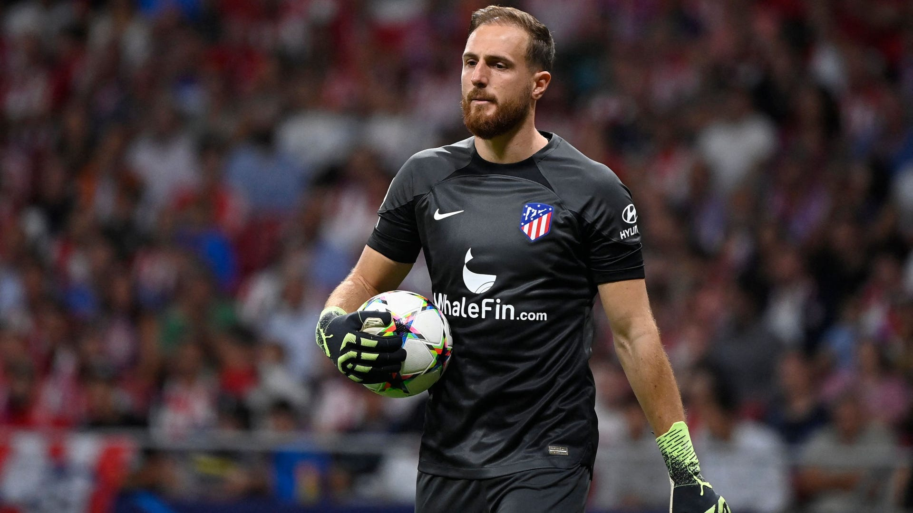
Negara: Slovenia
Klub: Atlético Madrid
Oblak dikenal karena stabilitas dan konsistensinya yang tinggi. Ia jarang melakukan kesalahan fatal dan sangat ahli dalam menjaga clean sheet, menjadikannya andalan pertahanan Atlético Madrid. Selain refleks yang cepat, ia juga mampu membaca permainan lawan dan selalu berada di posisi yang tepat untuk menahan serangan. Kemampuannya menghadapi tekanan lawan membuat striker lawan sulit menembus pertahanannya. Oblak juga unggul dalam aspek kepemimpinan. Ia mampu mengatur lini belakang, memberi arahan kepada rekan setim, dan menjaga koordinasi pertahanan tetap rapat. Kombinasi teknik, fokus, pengalaman, dan disiplin membuatnya diakui sebagai salah satu kiper terbaik di dunia pada tahun 2025.
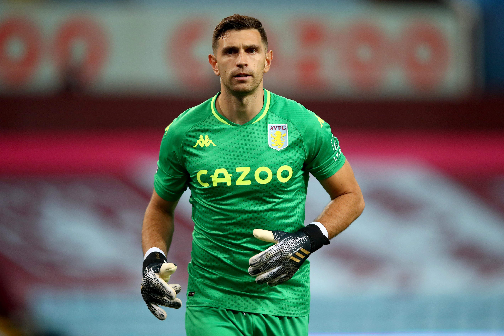
Negara: Argentina
Klub: Aston Villa
Martínez dikenal sebagai kiper yang sangat tangguh dalam situasi tekanan tinggi, terutama di momen-momen penting seperti penalti atau pertandingan final. Refleksnya yang cepat dan kemampuan membaca permainan membuatnya sering tampil sebagai penentu kemenangan bagi timnya. Ia juga memiliki ketahanan mental yang kuat, sehingga tetap tenang dalam situasi kritis dan mampu menghadapi striker terbaik lawan tanpa panik. Selain keunggulan individu, Martínez mampu memimpin pertahanan dengan sangat efektif. Ia memberi arahan pada bek, mengorganisasi pertahanan, dan selalu berada di posisi yang tepat untuk memotong serangan lawan. Kombinasi kemampuan teknis, mental, dan pengalaman menjadikannya salah satu kiper paling berpengaruh di dunia pada tahun 2025.
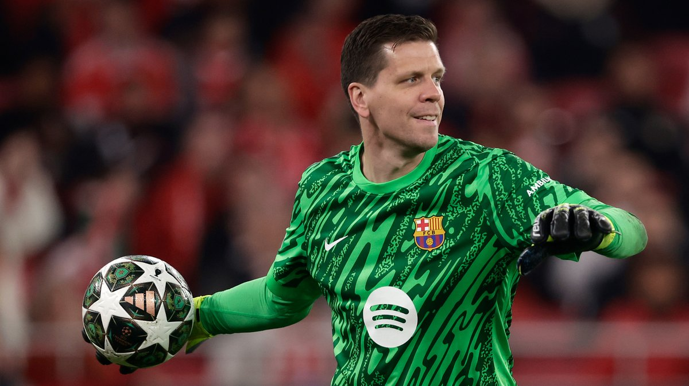
Negara: Polandia
Klub: Barcelona
Szczesny dikenal sebagai kiper yang sangat stabil dan konsisten dalam performa. Ia mampu melakukan penyelamatan krusial dalam berbagai situasi, baik dari tembakan jarak dekat maupun serangan mendadak lawan. Refleksnya cepat dan insting permainan sangat baik, sehingga ia mampu membaca pergerakan striker lawan dengan tepat. Kemampuannya untuk tetap tenang di bawah tekanan membuat lini belakang tim lebih percaya diri, terutama saat menghadapi pertandingan besar di liga domestik maupun kompetisi Eropa. Selain keahlian teknis, Szczesny memiliki kemampuan kepemimpinan yang menonjol. Ia mampu mengatur pertahanan, memberi arahan kepada rekan setim, dan menjaga koordinasi lini belakang secara konsisten. Kestabilan mental dan pengalaman bertahun-tahun di level tertinggi membuatnya menjadi salah satu kiper top Eropa, dihormati karena ketangguhan dan kontribusinya dalam menjaga performa tim tetap solid.
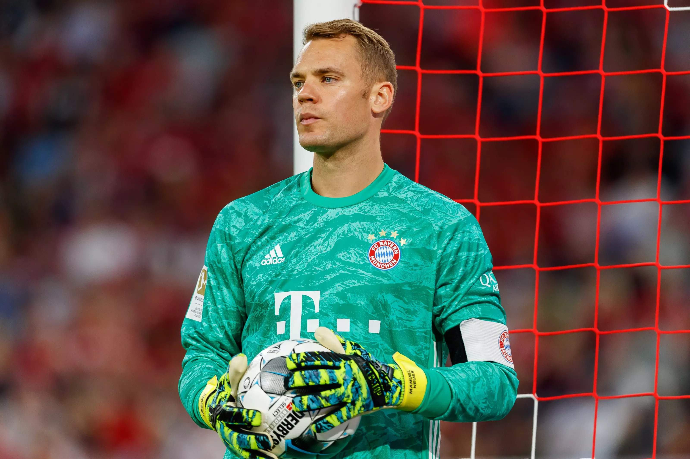
Negara: Jerman
Klub: Bayern Munich
Neuer dikenal sebagai kiper yang revolusioner dan modern, karena selain mampu menjaga gawang, ia juga sering berperan sebagai “sweeper-keeper” yang keluar dari kotak penalti untuk memotong serangan lawan. Refleksnya sangat cepat dan insting permainannya tajam, sehingga sering melakukan penyelamatan penting dalam situasi kritis. Ia mampu membaca pergerakan striker lawan dengan presisi tinggi, membuatnya menjadi andalan bagi tim, baik di level domestik maupun di kompetisi Eropa. Selain kemampuan teknis, Neuer memiliki kepemimpinan yang sangat menonjol. Ia mampu mengatur lini belakang, memberi instruksi kepada bek, dan menjaga koordinasi tim dengan disiplin tinggi. Mentalnya yang kuat di momen-momen penting, seperti final Liga Champions dan turnamen internasional, menjadikannya salah satu kiper terbaik sepanjang masa dan figur inspiratif bagi banyak kiper muda di seluruh dunia.
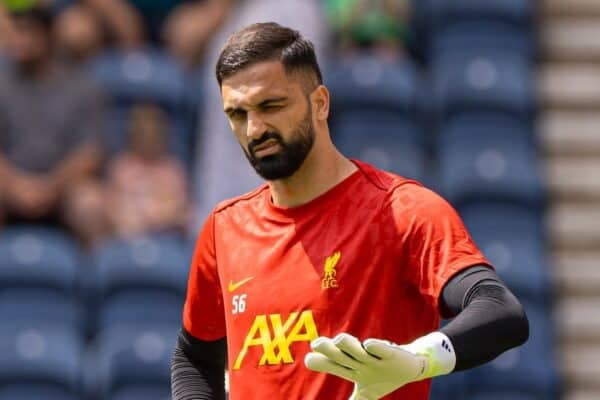
Negara: Georgia
Klub: Liverpool
Mamardashvili dikenal sebagai kiper muda yang cepat berkembang dan memiliki kemampuan teknis yang menonjol. Refleksnya tajam, terutama dalam menghadapi tembakan jarak dekat, dan ia mampu membaca pergerakan lawan dengan cermat. Ketenangannya di bawah tekanan membuat lini belakang tim merasa lebih aman, sementara distribusi bolanya yang presisi membantu tim memulai serangan dari belakang dengan lebih efektif. Kecepatan reaksi dan insting permainannya menjadikannya kiper yang dapat diandalkan dalam berbagai situasi kritis. Selain keahlian individu, Mamardashvili menunjukkan kepemimpinan yang luar biasa meski masih muda. Ia mampu mengatur pertahanan, memberikan arahan kepada rekan setim, dan menjaga koordinasi lini belakang dengan disiplin tinggi. Mentalnya yang kuat serta konsistensi performa membuatnya semakin menonjol di kancah Eropa, menjadikannya salah satu kiper muda paling menjanjikan di tahun 2025.
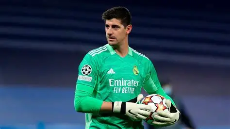
Negara: Belgia
Klub: Real Madrid
Courtois memiliki postur tinggi dan kemampuan shot-stopping yang luar biasa, sehingga sulit bagi striker lawan untuk mencetak gol. Ia juga dikenal sangat stabil dalam pertandingan besar, termasuk final dan laga-laga penting Liga Champions. Refleksnya cepat, kontrol posisi sangat baik, dan kemampuannya menahan tembakan dari jarak dekat maupun jauh menjadikannya salah satu kiper elite dunia. Pengalaman bertahun-tahun di kompetisi top Eropa menambah keunggulannya. Courtois mampu memimpin lini belakang dengan tegas, memberi instruksi kepada bek, dan mengantisipasi serangan lawan sebelum mencapai kotak penalti. Kepemimpinan, konsistensi, dan ketangguhan mental membuatnya menjadi salah satu kiper terbaik dunia pada tahun 2025.
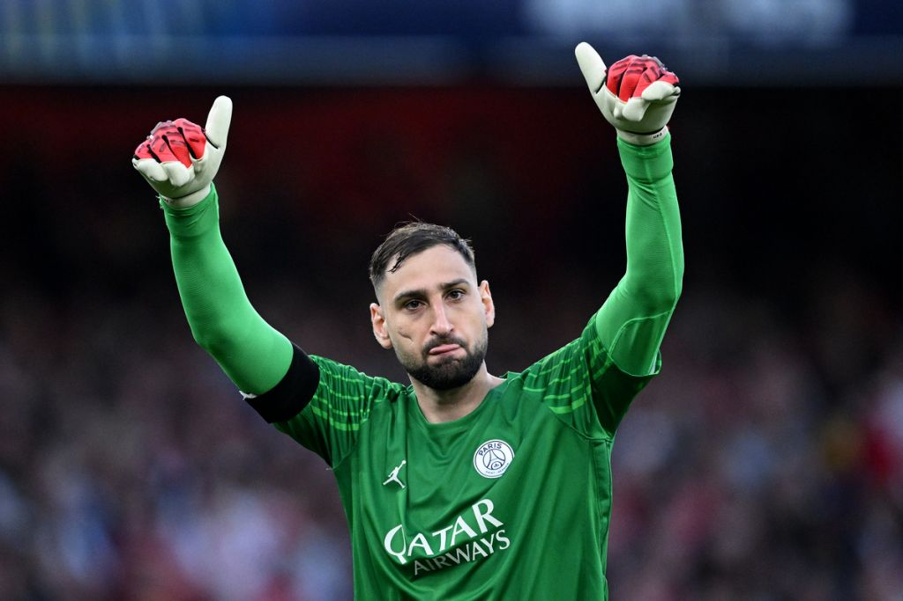
Negara: Italia
Klub: Manchester City
Donnarumma menonjol karena konsistensinya yang luar biasa dan kemampuan melakukan penyelamatan krusial di pertandingan besar. Refleksnya sangat cepat, mampu membaca arah serangan lawan, dan jarang membuat kesalahan di bawah tekanan. Ketenangannya di bawah mistar gawang membuat timnya merasa aman dalam setiap pertandingan, baik di kompetisi domestik maupun internasional. Ia juga memiliki kemampuan distribusi bola yang baik, sehingga dapat memulai serangan dari belakang dengan presisi. Selain kemampuan teknis, Donnarumma juga unggul dalam aspek mental dan kepemimpinan. Ia mampu mengatur lini belakang, memberi instruksi kepada bek, dan menjaga konsistensi performa sepanjang musim. Kualitas ini membuatnya layak memenangkan Yashin Trophy 2025 dan diakui sebagai salah satu kiper terbaik dunia saat ini.